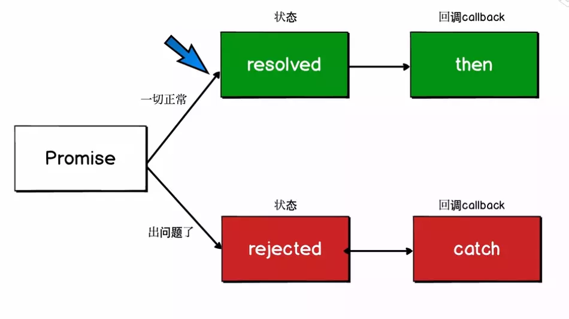

本篇博文出至于我的
github仓库：web-study，如果你觉得对你有帮助欢迎star，你们的点赞是我持续更新的动力，谢谢！
异步编程在前端开发中尤为常见，从最早的XHR，到后来的各种封装ajax，再到DOM事件触发的回调，无不涉及异步编程。今天咱们来聊聊ES6中新提出的异步解决方案：Promise和async/await。
Promise 是一种对异步操作的封装，可以通过独立的接口添加在异步操作执行成功、失败时执行的方法。主流的规范是 Promises/A+。
Promise中有几个状态：
* pending: 初始状态, 非 fulfilled 或 rejected；
* fulfilled: 成功的操作，为表述方便，fulfilled 使用 resolved 代替；
* rejected: 失败的操作。
pending可以转化为fulfilled或rejected并且只能转化一次，也就是说如果pending转化到fulfilled状态，那么就不能再转化到rejected。并且fulfilled和rejected状态只能由pending转化而来，两者之间不能互相转换。
Promise是一个构造函数，自己身上有all、reject、resolve这几个眼熟的方法，原型上有then、catch等同样很眼熟的方法。
resolve的用法
var p = new Promise(function(resolve, reject){
//做一些异步操作
setTimeout(function(){
resolve('随便什么数据');
}, 2000);
})
p.then(res => {
console.log(res) // '随便什么数据'
})Promise的构造函数接收一个参数，是函数，并且传入两个参数：resolve，reject，分别表示异步操作执行成功后的回调函数和异步操作执行失败后的回调函数。其实这里用“成功”和“失败”来描述并不准确，按照标准来讲，resolve是将Promise的状态置为fullfiled，reject是将Promise的状态置为rejected。
在上面的代码中，我们执行了一个异步操作，也就是setTimeout，2秒后，并且调用resolve方法，表示异步操作执行成功。
reject的用法javascript var p = new Promise(function(resolve, reject){ //做一些异步操作 setTimeout(function(){ reject('随便什么数据'); }, 2000); }) p.catch(err => { console.log(err) // '随便什么数据' })
上面我们在异步操作中调用了reject方法，也就是说把Promise的状态由pending转换到了fulfilled状态，最后可以通过Promise实例对象的catch()方法获取异步数据。
异步操作是 JavaScript 编程的麻烦事，很多人认为async函数是异步操作的终极解决方案。
async/await是写异步代码的新方式，优于回调函数和Promise。
async/await是基于Promise实现的，它不能用于普通的回调函数。
async/await与Promise一样，是非阻塞的。
async/await使得异步代码看起来像同步代码，再也没有回调函数。但是改变不了JS单线程、异步的本质。
使用await，函数必须用async标识
await后面跟的是一个Promise实例或者是其他的任意js表达式（意义不大）
var fun = async () => {
let result = await Promise.resolve(123)
console.log(result)
}
fun() // 123await等待的虽然是promise对象，但是不用调用.then()方法就能直接得到返回值。
Promise虽然一方面解决了callback的回调地狱，但是相对的把回调“纵向发展”了，形成了一个回调链。example：
function sleep(wait) {
return new Promise((res,rej) => {
setTimeout(() => {
res(wait)
},wait)
})
}
/*
let p1 = sleep(100)
let p2 = sleep(200)
let p =*/
sleep(100).then(result => {
return sleep(result + 100)
}).then(result02 => {
return sleep(result02 + 100)
}).then(result03 => {
console.log(result03)
})控制台输出：
300
后面的结果都是依赖前面的结果。
改成async/await写法就是：
async function demo() {
let result01 = await sleep(100)
//上一个await执行之后才会执行下一句
let result02 = await sleep(result01 + 100)
let result03 = await sleep(result02 + 100)
// console.log(result03);
return result03
}
demo().then(result => {
console.log(result)
})因为async返回的也是promise对象，所以用then接受就行了。
结果：
300
需要注意的就是 await是强制把异步变成了同步，这一句代码执行完，才会执行下一句。